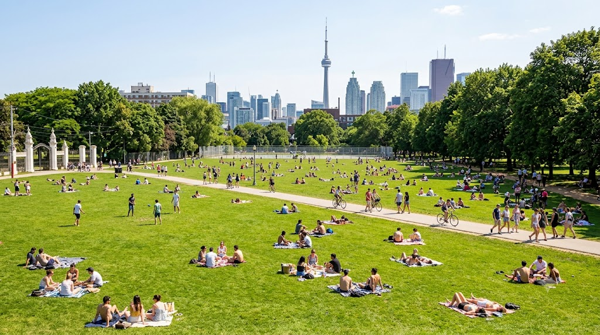
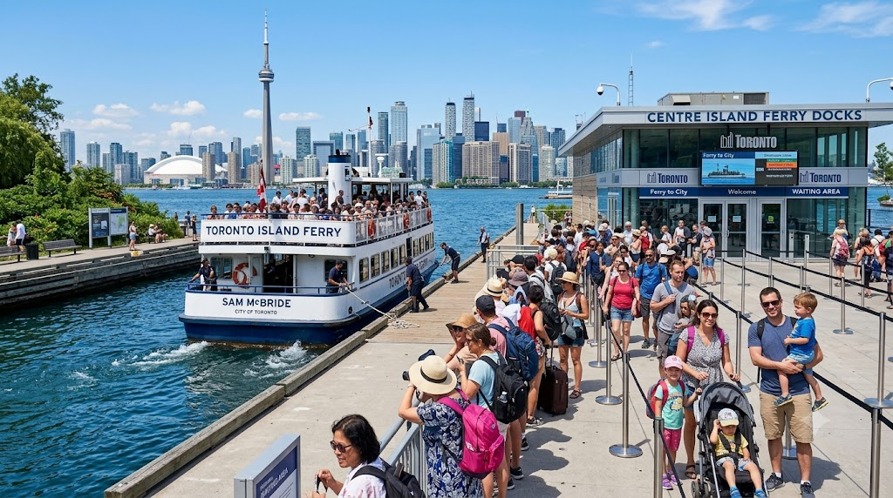
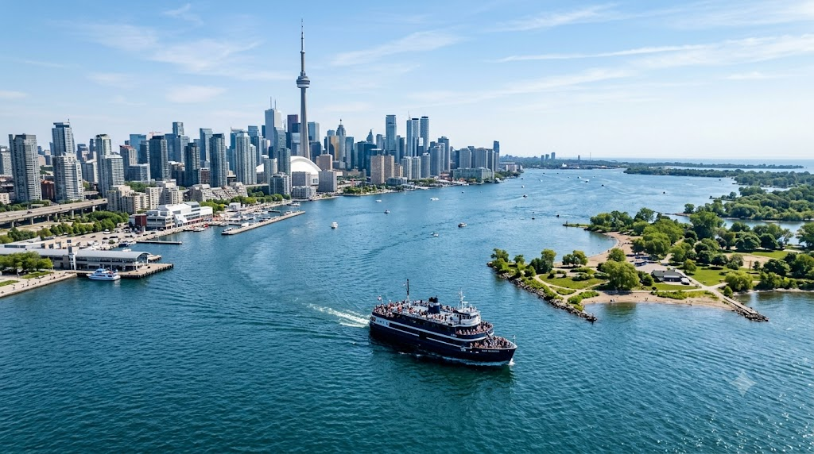

Centre Island
Centre Island
Centre Island Botanical Gardens
Sprawling manicured flowerbeds, peaceful fountains, reflective ponds, and arched footbridges connecting walking paths across the lagoon.
Take Ferry Here →Escape the busy downtown streets to expansive lawns, tranquil weeping willows, sandy beaches, and protected wildlife bird sanctuaries.
Filter through Toronto Island's diverse network of interconnected parks, gardens, and heritage landmarks.
Centre Island
Sprawling manicured flowerbeds, peaceful fountains, reflective ponds, and arched footbridges connecting walking paths across the lagoon.
Take Ferry Here →
Ward's IslandA Blue Flag certified swimming beach looking east across Lake Ontario. Features soft sands, gentle waves, and a scenic wooden boardwalk.
Take Ferry Here →The world-famous vantage point for unobstructed views of the CN Tower and Toronto skyline across the harbour waters. Unrivalled photography spot.
Take Ferry Here →
Centre IslandInspired by the Franklin the Turtle storybooks, offering interactive storybook sculptures, hands-on pollinator gardens, and nature play zones.
Take Ferry Here →
Hanlan's PointThe oldest stone lighthouse standing on the Great Lakes. Shrouded in maritime legend and mystery, surrounded by quiet forest nature trails.
Take Ferry Here → Central Archipelago
Central Archipelago
Sheltered canal waterways separating the 15 interconnected islands. Home to blue herons, turtles, wild swans, and canoeing pathways.
Take Ferry Here →Everything you need for a comfortable full-day excursion on the Toronto Islands.
12 accessible washrooms and family changing rooms located across all three islands.
Free potable water bottle refill stations at all ferry docks, park pavilions, and beaches.
City of Toronto certified lifeguards stationed at Centre, Ward's, and Hanlan's beaches from 10:30 AM – 7:00 PM.
100% barrier-free smooth paved pathways and accessible boardwalk ramps to beaches.